Звуковое оборудование
Аудиосистемы, микрофоны, усилители и микшерные пульты.
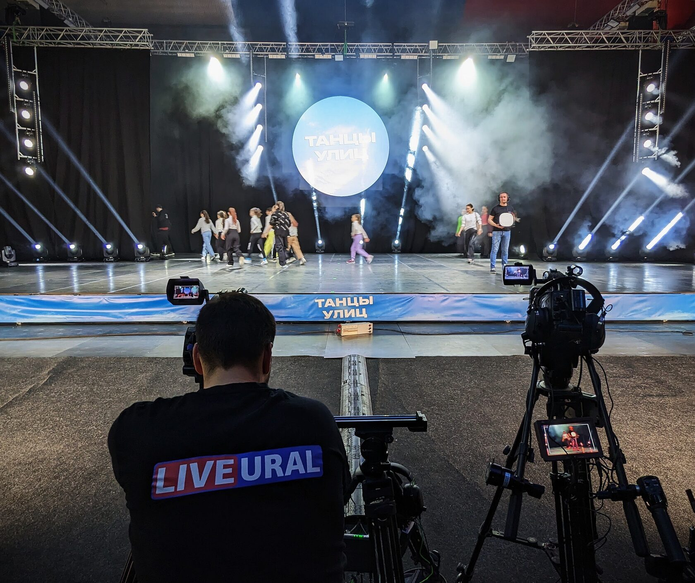
ПРЯМЫЕ ТРАНСЛЯЦИИ · СВЕТОДИОДНЫЕ ЭКРАНЫ · ТЕХНИЧЕСКОЕ ОБЕСПЕЧЕНИЕ
Каталог услуг
НАВИГАЦИЯ
ОПЫТ · ТЕХНИЧЕСКАЯ БАЗА
LiveUral начала в 2011 году с трансляции конкурса «Российская студенческая весна».
КЛИЕНТЫ И ОФИЦИАЛЬНЫЕ ОТЗЫВЫ
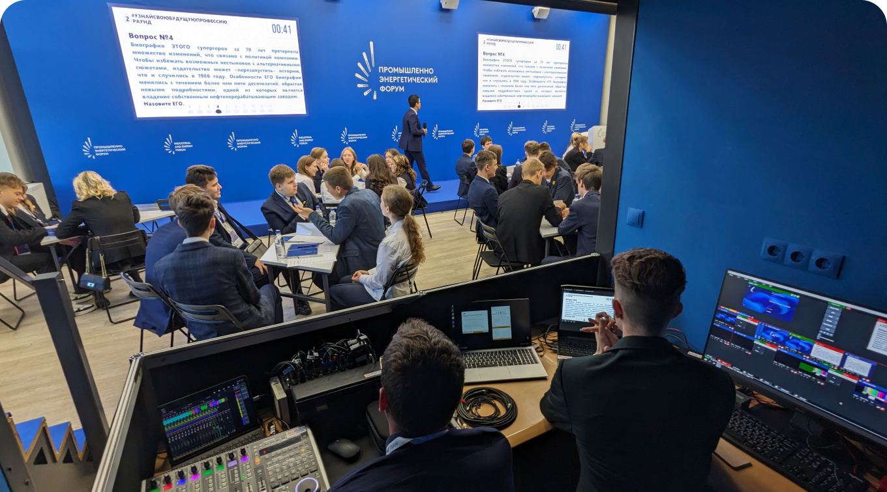
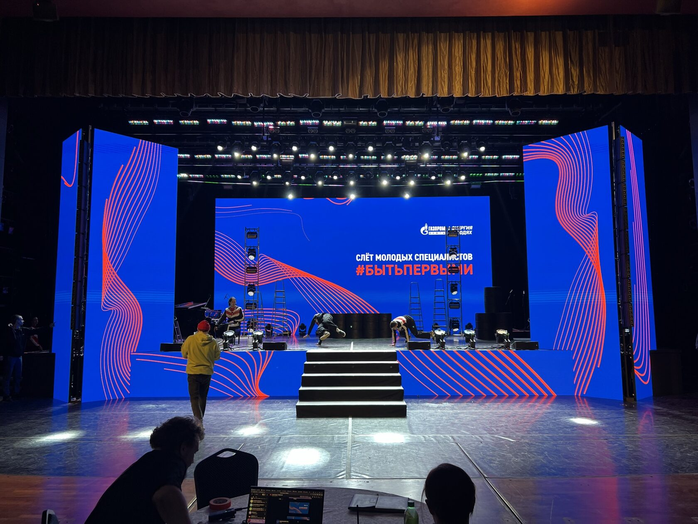
ОРГАНИЗАЦИЯ ПРЯМЫХ ТРАНСЛЯЦИЙ
Полный цикл производства: от съёмки до вещания.
100 трансляций в годЦикл трансляций концертов Тюменского филармонического оркестра · 2023–2024
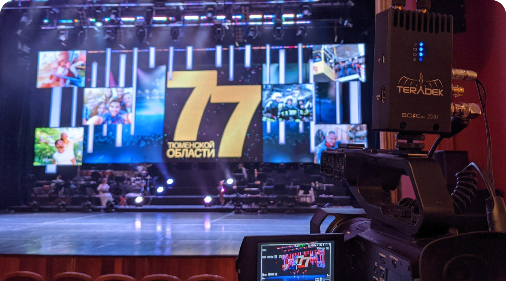
ПРОКАТ · ДОСТАВКА · МОНТАЖ
ОТ ПЛАНИРОВАНИЯ ДО ТЕХНИЧЕСКОГО ОБСЛУЖИВАНИЯ
Аудиосистемы, микрофоны, усилители и микшерные пульты.
Светодиодные прожекторы, сценические светильники и лазерные установки.
Мобильные сцены, декорации и конструкции для оформления помещений.
Интернет для гостей и организаторов.
Онлайн-подключение удалённых участников по видео и аудио.
Системы видеонаблюдения для контроля мероприятия.
ОБОРУДОВАНИЕ И ТЕХНИЧЕСКИЕ ВОЗМОЖНОСТИ
Аудиосистемы, микрофоны, усилители и микшерные пульты
Светодиодные прожекторы, сценические светильники и лазерные установки
Мобильные сцены разных размеров и конфигураций
Для помещений, улиц, фасадов зданий и мероприятий
ПОРТФОЛИО LIVEURAL
ПОРТФОЛИО LIVEURAL
ОФИЦИАЛЬНЫЕ ОТЗЫВЫ
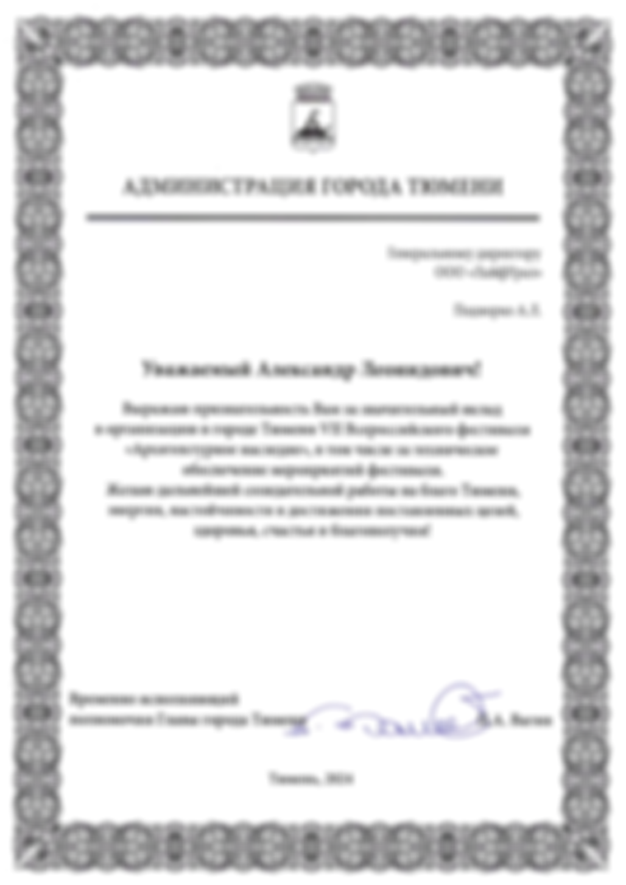
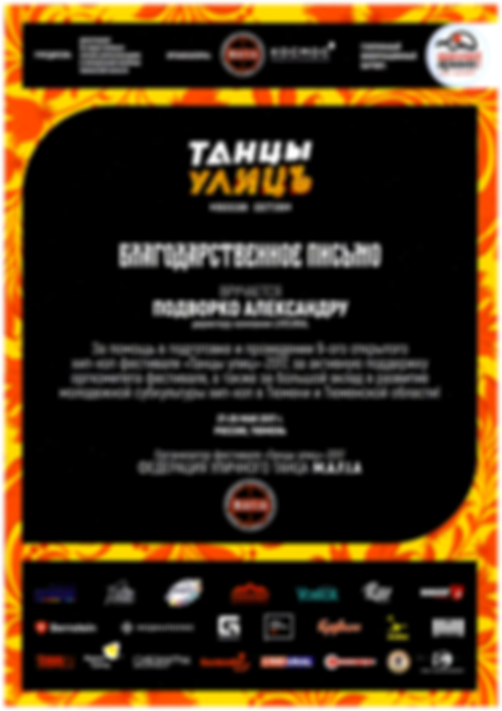
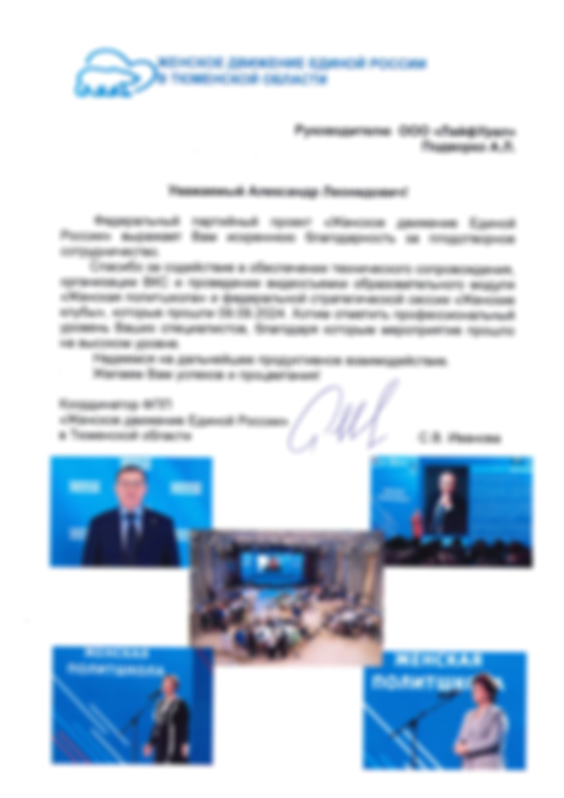
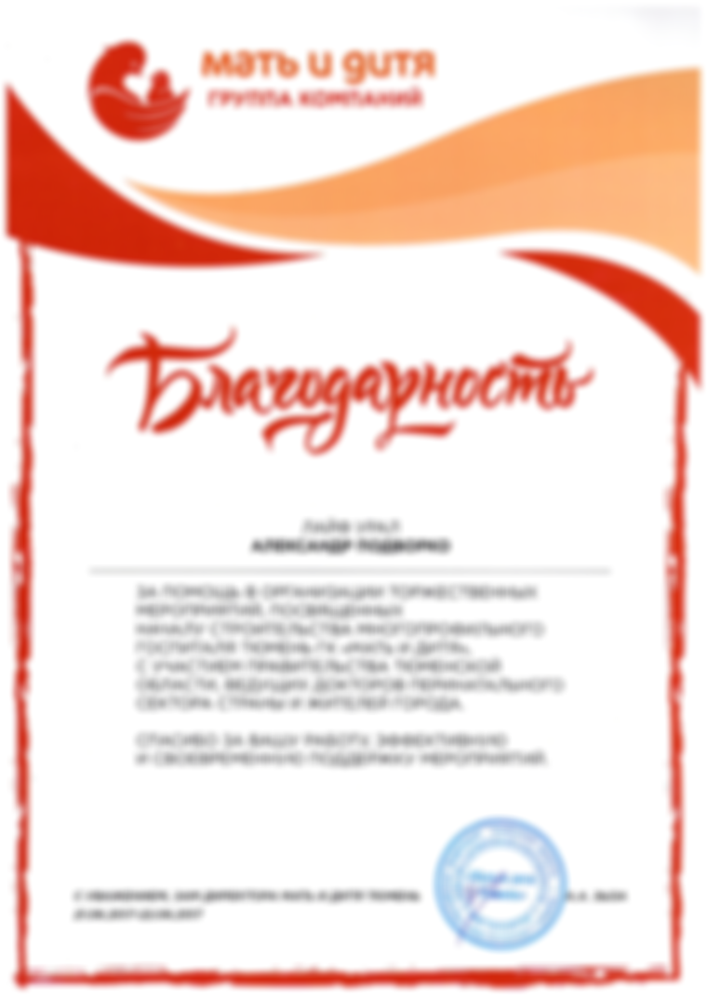
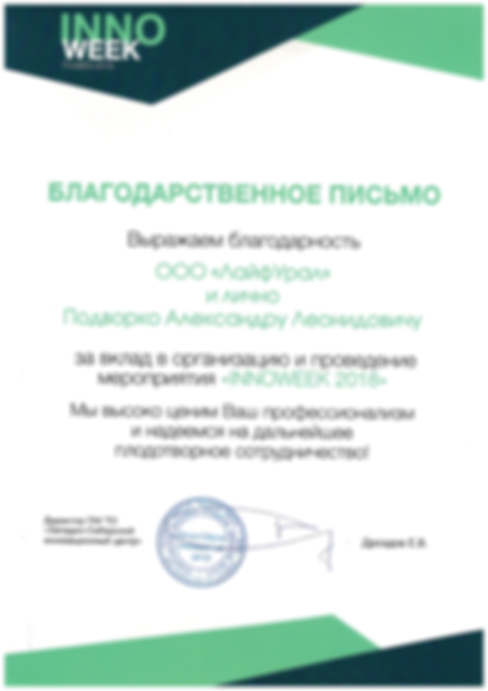
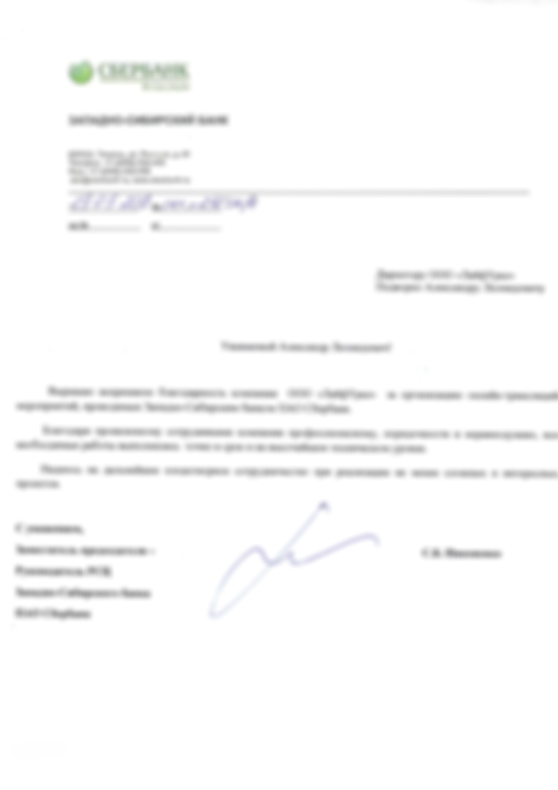
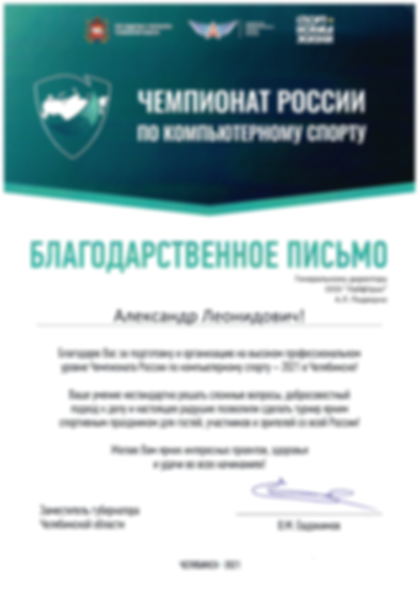
ОСТАВЬТЕ ЗАЯВКУ НА КОНСУЛЬТАЦИЮ
ООО «ЛайфУрал» · ИНН 7224046406 · КПП 720301001 · ОГРН 1117232054158